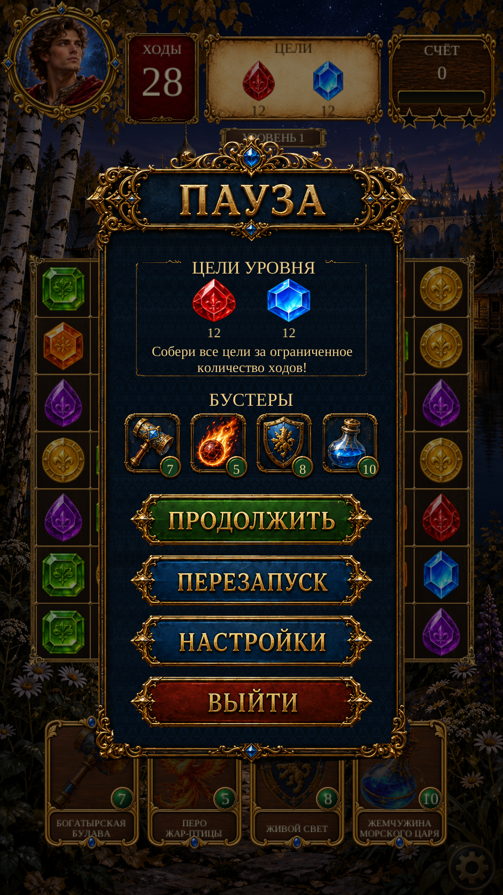

Page 10 — «Пауза» · R1
Original title and action artwork over the actual paused game. Goals and booster quantities use current round data. Russian title/button lettering retains its source pixels; English uses live labels. Resume, restart, settings and exit use the existing game flow.

One portrait at a time. The reference depicts an older Gameplay design; this implementation preserves the accepted current board, scenery and HUD behind the Pause modal. Source alpha and reconstructed hidden surfaces are not claimed pixel-perfect. No full-screen screenshot is used at runtime. Scenario: five alpha jobs, 15 creative units.